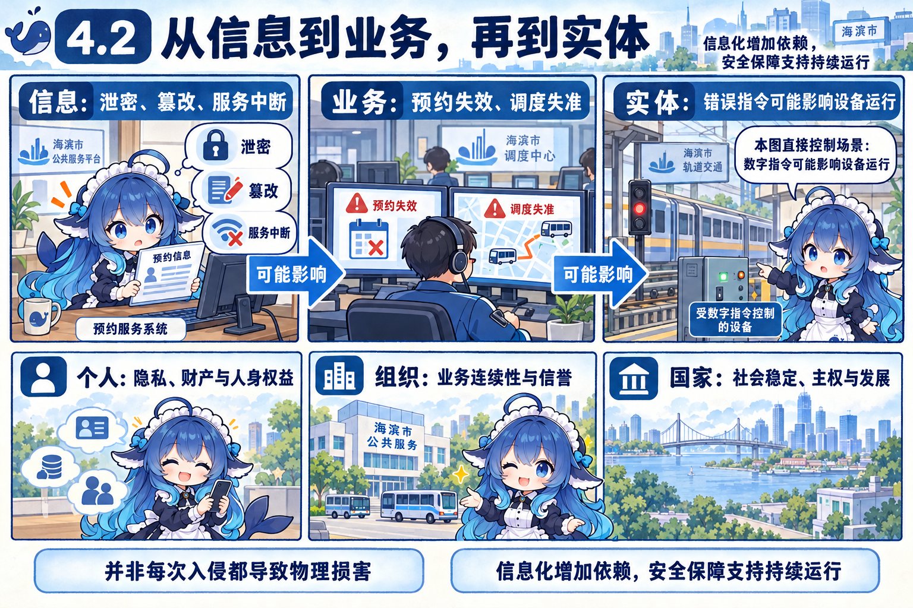
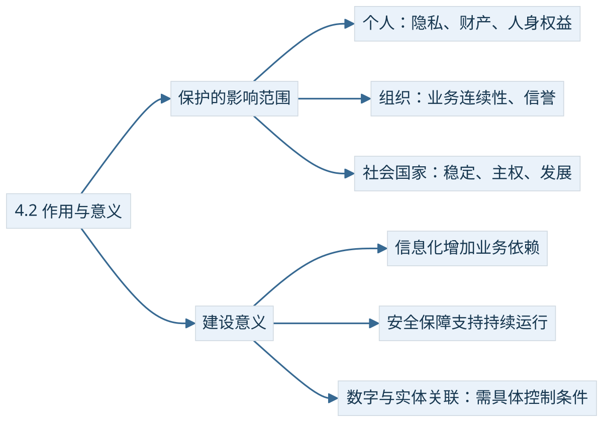

预约系统存着正确的信息，调度人员却暂时打不开；另一次，系统仍能打开，关键的调度指令被改了。两件事都会影响业务，后果的路径不同。信息安全的作用要沿着系统实际承担的业务来看。
信息不只被阅读，还会触发行动
教材4.2从入侵、恶意软件、计算机犯罪、钓鱼诈骗、有害信息与隐私泄露等现象说明安全保障的必要性。泄密可能侵害个人权益，伪造信息可能误导判断，中断服务会打断正常工作。今天许多业务把查询、支付、生产调度放进信息系统，依赖越深，安全事件越容易沿业务关联扩大影响。
在工业控制等系统中，数字指令还能改变设备的实际动作。因此安全影响可能由信息与软件延伸到物理设备和人身安全。这类直接影响有具体前提：系统真的控制设备，错误或恶意指令确实能到达执行环节。普通网页的错误文字不能直接推出某台机器将受损。


把影响放到三个尺度
个人关注隐私、财产和人身权益。诈骗可能利用泄露的身份线索，有害信息也可能影响个人生活。组织关注业务能否持续、数据和决策是否可靠，以及经济利益和信誉。预约、供应链或生产服务中断后，影响可能延伸到依赖它们的上下游。社会与国家则关注公共服务、社会稳定、国家主权和发展能力。三者相互关联，不能按个人、组织、国家排成每次事件必定经历的升级阶段。
安全保障因此需要与信息化建设同步考虑。要在业务需求中写清需要保护的资产、可接受的停顿和损失，再落实技术、组织与管理职责。只购买设备而没有负责运行、处理告警和恢复的人，保障链仍有缺口；下一节将展开这些职责。
教材历史事件怎样帮助理解
教材以2010年前后的工业控制攻击说明网络攻击可能产生实体影响。Symantec对Stuxnet的技术研究确认其针对特定工业控制系统并修改控制器代码。本册采用这个机制层结论，损坏数量和攻击者归属不作为本节记忆指标。历史技术依据：Stuxnet Dossier。
教材还以2014年的网络安全与信息化治理背景说明两者关乎国家发展。这是教材的历史背景；复习需要保留“总体布局、统筹保障与发展”的意义，不把当年的机构设置写成今天的组织现状。APT（Advanced Persistent Threat，高级持续性威胁）是教材连接术语，识别其持续、有针对性的威胁特征即可，本节不扩展攻防操作。


回到开头的两次异常：第一件事先损害服务可用性，第二件事损害指令完整性，随后都可能沿业务依赖影响现实。说明作用与意义时，要给出这条关联及前提，单列几种算法还不足以回答这个问题。